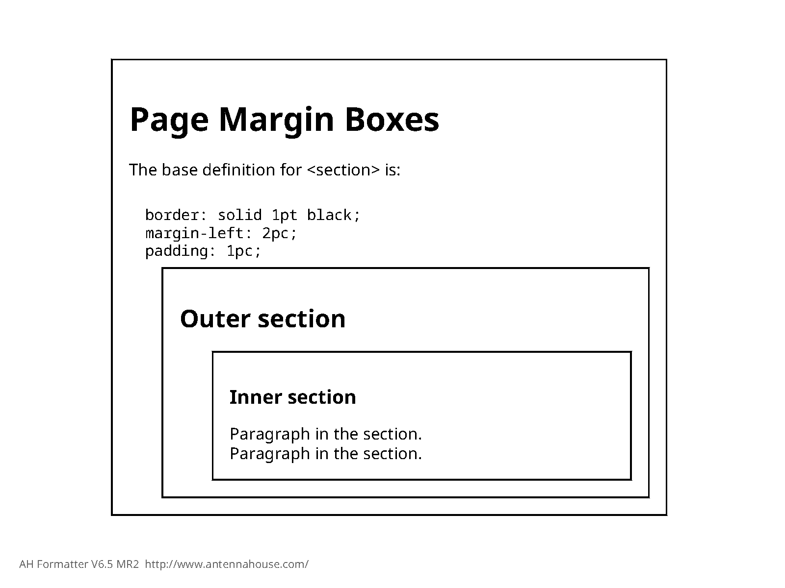
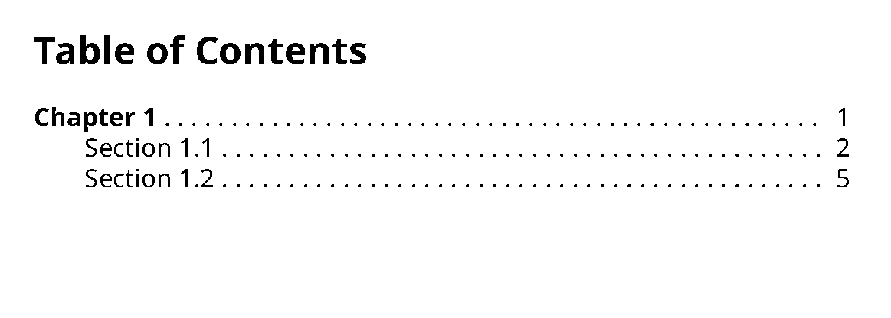
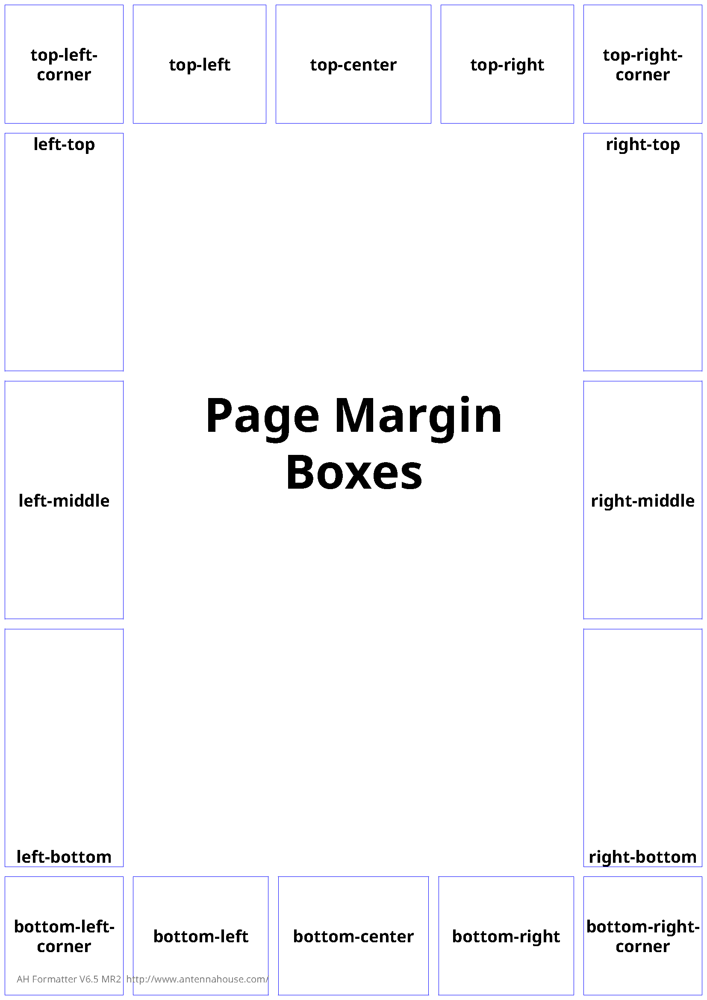

Introduction to CSS Pagination
The Cascading Style Sheet specification, CSS, was originally developed to make it easy to apply styles to HTML and XML content in browsers. As originally developed it was not designed to meet the more challenging requirements of paged output. While CSS can be applied to arbitrary XML, it was primarily designed to meet the needs of styling HTML and that continues to be its focus today.
In the late 1990's and early 2000s the XSL Formatting Objects specification (XSL-FO or just "FO" for short) was developed as a technology for producing paged output from XML. It met that need well and has been used widely for the production of pages for technical manuals, utility bills and similar business documents, and other publications that require a completely automated publishing process and for which XSL-FO's layout features are sufficient.
While XSL-FO works well it requires skills and knowledge that are not widely available. XSL-FO requires the use of XSLT transforms to generate the XSL-FO documents that are then the input to XSL-FO formatting engines. Like any complex and specialized technology, XSL-FO can be a challenge to learn.
In the years since the XSL-FO specification was first published the CSS community has started adding pagination features to CSS in order to enable CSS-based styling of paged output as well as browser-based output.
I was one of the developers of the XSL-FO specification and one of the earlier implementors of XSL-FO-based systems. At the time, XSL-FO was the only available standard for doing high-quality pagination of XML content (older standards like DSSSL were not supported by that time). It allowed us to implement batch composition that was effective and affordable. One of my earliest XSL-FO clients was Nokia's mobile phone group, who needed to be able to produce mobile phone manuals in more that 40 national languages for release at the same time world wide. They wanted to be able to use a single source format, XML, and a single publication tool chain, something they had not been able to do before. We were able to implement an XSLT- and XSL-FO-based solution that met all their requirements, including publishing documents in Arabic, Hebrew, Thai, and a number of south-Asian scripts, all of which present significant typographic challenges.
Fast forward 15 years and the situation had not changed much: XSL-FO was still the only standard for doing high-quality pagination of XML-based content and it was still in wide use. In the DITA community, in particular, XSL-FO was almost universally used for producing printable versions of DITA-based publications. But the use of XSL-FO presented a number of problems: it's a challenging standard to master on its own, the number of people who know it is small, and the free open-source tooling for using XSL-FO with DITA was hard to use, making creating good-looking pages from DITA harder than it should have been.
By 2015 the CSS pagination specifications had reached a level of maturity that made it possible to use CSS pagination for the kinds of publications that XSL-FO had been used for up to that point. At the same time, a number of commercial tools emerged that support CSS pagination reasonably well, include the Prince XML product, the Antenna House Formatter CSS processor, and the Vivliostyles in-browser CSS pagination tool. Unfortunately, no sufficiently-complete open-source solution was available (or is available as of spring 2018).
- Many more people are familiar with CSS and, even if it's not really any easier to do pagination with it, will be more likely to try simply because "it's CSS"
- Existing CSS skills and knowledge are directly applicable to using CSS for pagination
- CSS style sheets can be shared between web and print delivery, making it easier to coordinate look and feel among print and online delivery of the same content.
- It makes a clearer separation between the concern of layout design and implementation ("graphic design") and the data processing needed to prepare content for pagination (transformation). This makes it easier to adjust the styling of publications without needing direct knowledge of XSLT programming.
- The syntax of CSS is simpler and more compact than the syntax of XSL-FO, making it generally easier to work with, or at least more approachable.
- There is a lot of tooling and infrastructure around CSS as a coding format, systems such as sass and less as well as CSS awareness in typical web development tools.
- There is no sufficiently-complete open-source solution as their is for XSL-FO (the Apache FOP project). That means you must invest in a commercial tool to do anything non-trivial with CSS for pagination.
- The CSS pagination specifications are not fully developed, meaning that there are aspects that are underspecified or in flux, features that are missing, and so on.
- The specifications themselves are scattered across many different individual documents, making it a challenge to find answers to specific how-to questions.
- Except for the book you're reading now, there is no centralized repository of knowledge and guidance for CSS pagination.
As someone who has been directly involved with XSL-FO and its application for many years, I have decided that, on balance, CSS for pagination is the better solution for most batch composition applications where the layout requirements can be met by XSL-FO and where budget allows licensing of a commercial CSS pagination tool. My analysis is the CSS-based pagination solutions will be easier to implement and, more importantly, easier to maintain over time, than the equivalent XSL-FO solution. Having spent more than a decade working with XSL-FO I would be happy to never have to work with it again because I find CSS to be that much easier to work with, flaws and all.
(There are batch composition applications where XSL-FO cannot meet all the requirements and in those cases proprietary technology is usually the right answer, such as the Typefi system for use with Adobe Illustrator. And of course in some cases fully-automated layout is simply not possible, such as highly-designed books and magazines, where at least some amount of manual work is always required.)
The purpose of this book is to capture the practical knowledge of how to do pagination with CSS that I've developed in the course of doing several CSS pagination projects with sophisticated and challenging layout requirements, projects that I would in the past have used XSL-FO for.
My hope is that this book will allow you to be productive with CSS pagination quickly, avoiding the pain I went through to learn how to do this.
Make no mistake: creating high-quality pages from sophisticated content is a challenge no matter what technology you use to do it. CSS can't make creating good pages easy any more than InDesign can. What it can do is make not be harder than it has to be and I think that's what CSS largely does, in the context of a batch composition system.
This book assumes that you have arbitrary XML representing some kind of publication—DITA, JATS, S20001D, or some home-grown vocabulary—and you want to use CSS to produce pages from it.
If you are authoring directly in HTML then your task is only slightly easier. For the purposes of this book, directly-authored HTML is just another flavor of arbitrary XML and all the same workflows and processing pipelines apply.
How CSS Pagination Works
CSS pagination takes HTML as input and produces pages as output.
- A transform, presumably implemented in XSLT, that takes your XML as input and produces what I call "CSS ready" HTML as output.
- A CSS pagination engine that takes the CSS-ready HTML as input and produces pages (e.g., PDF) as output.
Why is this transform necessary, even if you are authoring directly in HTML?
- CSS is optimized for use with HTML and most of your existing CSS style sheets will already be for HTML. So it's much easier to style HTML with CSS than to style arbitrary XML.
- CSS cannot itself do transformation, it only decorates. So if anything in your source needs to be moved or if you need to generate anything, such as tables of contents, there must be a separate transform that does it.
Thus, any non-trivial CSS-based pagination system will always involve a transform that produces HTML optimized for styling with CSS. More about these transforms later.
- Construct elements needed to populate running headers, running feet, or side elements (for example thumb tabs).
- To add @class attribute values or other attributes to elements to work around limitations in CSS selectors. In particular, you cannot select elements based on properties of following siblings or get attribute values from ancestor elements.
- Generate tables of contents, back-of-the-book indexes, and other structures that are part of your deliverable but not authored in the source.
- Move elements that are not presented in the order they are authored. For example, in DITA moving the titles of figures to the bottom of the figure container (DITA figures are authored with the figure title as the first subelement of the figure container).
- Add wrapper elements in order to control page sequence association.
For most, if not all, typical documentation-focused XML applications there is already one or more general HTML-generation transforms available. So for the HTML preparation transform can either be an extension to these existing transforms or a separate, much simpler transform applied to the HTML produced by these transforms.
If you are authoring directly in HTML then the HTML preparation transform should be fairly simple.
To actually produce the pages you need a "pagination engine", a processor that takes your prepared HTML and the associated CSS as input and produces pages from it. Note that no browsers are ever likely to do CSS pagination out of the box for a number of reasons, some good, some not so good. So even within a browser you'll need a tool to do the pagination, such as the Vivliostyle engine, which uses JavaScript in the browser to render pages directly (it can also be used as a standalone engine using a JavaScript server).
The more typical use case is to use a standalone CSS pagination engine like Antenna House Formatter or Prince, which produce PDF or other formats.
For the purposes of this book I will assume that you are using a standalone engine to produce PDFs. Just know that there other options.
CSS pagination extends the base CSS model by adding new CSS rules for defining pages and for associating elements with page rules. CSS pagination also provides additional CSS features specific to paged output, such as page number references, footnotes, and additional features for generated text.
For the content of pages you use normal CSS styling exactly as you would for HTML rendered in a browser.
Note that having the styling definition, the CSS style sheet, separate from the transformation that prepares the source data to be styled, creates an important separation of concerns that is not present in most other batch composition systems and certainly not in most XSL-FO-based publishing processes.
The reason this separation of concerns is important is because transforming XML and styling content are two very different skills that are usually done by different people.
In an XSL-FO-based approach the graphic designer who designs the layout details has to then communicate the design to an engineer who implements a transform that generates the appropriate XSL-FO markup to achieve the desired design. This either creates a level of separation between the graphic designer and the realization of their design or, as seems to be the case more often, it requires graphic designers to become XSL-FO programmers.
By contrast, the CSS-based approach creates a cleaner separation between the graphic design implementation activity, which is mostly implemented through the CSS styule sheets, and the data preparation activity, which is implemented through XSLT or some similar transformation mechanism. While there is still a need for coordination between the graphic designer and the transformation engineer, it is mostly about @class values, elements needed for running heads and feet and generation of things like tables of contents. Once the HTML preparation details have been determined, the styling can be developed and changed without any need for additional transformation engineering work.
In addition, the overall complexity of the transformation required is usually much lower than the equivalent XSL-FO-generating transformation would be, making the transformation engineer's job easier and, potentially, making that task accessible to people who are not primarily XSLT engineers. Even if the process requires development of an XML-to-HTML transform for the content, that transform tends to be easier to implement than an XML-to-XSL-FO transform.
Basically, a CSS-based pagination process has the effect of breaking the data processing and implementation definition problem into several smaller parts, each one of which is easier to create and manage than a single XML-to-XSL-FO process would be, while also making it easier to apply the right skills to each component of the process.
CSS Basics
A brief introduction to the basics of CSS.
There is no shortage of good introductory material on CSS available. This topic is not intended to replace those resources. Rather, it's mostly just to provide a level set on basic CSS concepts and terminology.
A CSS style sheet consists of a set of rules.
There are two types of rules: rule sets and at-rules.
p.note {
margin-left: 1pc;
border: 1pt solid black;
padding: 4pt;
}A block starts with a left curly brace ('{') and ends with the matching right curly brace ('}').
Here <p.note> is the selector, in this case selecting
<p> elements with a @class value that includes the
keyword "note" (e.g., <p class="note"></p>). The block
includes three properties, margin-left, border, and
padding.
@identifier and continue up to the next semicolon or
block, whichever comes
first:@import "page-masters.css" print;
@page :first {
counter-reset: page;
}Here the @import at-rule imports a style sheet named "page-masters.css" when the media query includes "print" and the @page rule applies to first pages and resets the counter named "page".
/* This is a comment
Second line of comment
*/CSS does not have single-line comments.
CSS style rules cascade based on precedence such that all the rules that match a given element are combined together to determine the final effective set of properties. Cascading rules are somewhat complex but in general the last declaration in the style sheet wins, which means that you should put more-specific style rules after less-specific style rules.
@import "page-masters.css" print;
@import "pagination-rules.css" print;
@import "common.css";@import url("page-masters.css") print;All @import rules must occur before any other rules in the style sheet.
- Literal strings delimited with single or double
quotes:
content: "Literal value" 'Another literal value'; - Keywords as defined for the property:
display: block; - Lengths (measurement values), which require a unit
indicator:
margin-top: 1in; /* Inches */ margin-left: 6pc; /* Picas (12 points) */ margin-right: 10mm; /* Millimeters */ font-size: 12pt; /* Points (1/72 inch) */ line-height: 1.2em; /* "Em" (current font size) */ width: 80vw; /* Percentage of viewport width */ height: 200px; /* Pixels */ - Percentages, a number followed by
"%":
line-height: 120%; /* 120 percent of inherited font size */ - URIs, denoted by the url()
function:
background-image: url("images/background-01.png"); - Counters, referenced by name from counter-related
properties:
Where "chapter-number" is the name of a counter.counter-increment: chapter-number; - Colors specified as either a color name, an RGB numeric value, or an
rgb()
function:
color: red; background-color: #C0C0C0; /* Grey */ border-top-color: rgb(0, 255, 255); /* Cyan */ border-bottom-color: rgb(0%, 50%, 0%); /* Dark green */
Unsupported values should be ignored per the CSS specification.
Most properties allow the keyword inherit as a value to indicate that the value should be whatever is inherited from an ancestor. I have not explicitly indicated where inherit is allowed in the discussion of properties below.
In CSS the edges of blocks are labeled "top", "bottom", "left", and "right". These designations are independent of the writing direction of the content.
XSL-FO uses the terms "before", "after", "start" and "end", as well as "inside" and "outside", to label the edges of blocks in a writing-direction-independent way. "before" and "after" correspond to "top" and "bottom", "before" and "after" correspond to "left" and "right". There is no defined concept of "inside" or "outside" in CSS pagination.
The display: Property: Blocks, Inlines, and Tables
CSS organizes the content to be displayed into systems of nested boxes or blocks. A given element is basically either a block, an inline, part of a table, or hidden.
p {
display: block;
}
span {
display: inline;
}<fo:block> and
<fo:inline>.div.draft-comment {
display: none;
}Note that sometimes you want things to be hidden rather than completely thrown away, in which case you may need to do things like make the font size very small (e.g., "0.1pt") or use a color of "white" to hide it. You may need to check how your CSS engine treats "none" display elements.
You can use a display: value of "table" or one of the other table-component keywords to map non-table elements to a tabular presentation. Depending on your source markup, you may need to generate extra elements to serve as table rows or table cells. Note that you can use :before and :after pseudo elements as cells (but usually not rows).
Box Properties: Borders, Margins, and Padding
- Margin: Space from the outside edge of the box to any border or padding.
- Border: Occurs between the margin and padding.
- Padding: Occurs between the border and the content rectangle.
The margin, border, and padding can be different for each of the four sides of a box.

From Cascading Style Sheets Level 2 Revision 1 (CSS 2.1) Specification
The sum of the margin, border, and padding for two parallel sides is subtracted from the total width of the box to determine the width or height of the box's content area.
For example, on an 8.5x11 inch page, if you specify a left margin of 1in and right margin of 1.5in, then the width of the page's content area is 8.5 - (1+1.5) or 6in.
More generally, margins create vertical space between blocks or create indention for blocks, padding separates the border from the content, and borders are borders.
Boxes can nest, so the edge of the content area for an outer box becomes the start of the outside of the margin area for an inner box, as shown here:

<html xmlns="http://www.w3.org/1999/xhtml">
<head>
<title>Page Margin Boxes</title>
<link rel="stylesheet" type="text/css" href="boxes-margin-padding.css" />
</head>
<body>
<section>
<h1>Page Margin Boxes</h1>
<p>The base definition for <section> is:
<code>
border: solid 1pt black;
margin-left: 2pc;
padding: 1pc;
</code>
</p>
<section>
<header>
<h2>Outer section</h2>
</header>
<section>
<header>
<h3>Inner section</h3>
</header>
<p>Paragraph in the section. </p>
<p>Paragraph in the section. </p>
</section>
</section>
</section>
</body>
</html>Essential CSS Properties
The essential properties used to style content for print include:
- display
- Specifies how the element will display, one of:
- inline
- The element generates inline boxes.
- block
- The element generates a box.
- inline-block
- A block that acts as an inline box for purposes of placement in the flow but acts as a box for the purposes of rendering its content. Inline blocks are useful for certain special effects.
- list-item
- The element is rendered with a principal block box and a marker box as for HTML list elements.
- table
- The table and other table-related values allow you to apply table formatting to arbitrary elements as long as the element structure provides a way to express table rows and cells.
- none
- The element is not displayed and has no effect on any surrounding elements. Compare with visibility: of "hidden".
When developing CSS style sheets for browser-based display you can depend on the built-in UI style sheet to provide appropriate default display: values for most elements. However, when setting up print-specific style sheets you often either don't have a built-in base style sheet or you need to override it in order to be able to better control the formatting details of content. Thus you may need to specify display: more precisely than you would for browser-based styles.
It is also easy to forget to set display: to "block" and wonder why your block-specific properties like margins and indents are not being applied.
- font-family
- Specifies the font to use for a given element. The value is a sequence of one or more
font names or generic font family
names:
body { font-family: "Verdana", sans-serif; }The generic font family names are:- serif: Specifies a serif font, e.g., Times Roman.
- sans-serif: Specifies a sans-serif font, e.g., Helvetica or Arial.
- monospace: Specifies a font where all the characters have the same width, e.g., Courier.
- cursive: A cursive font, e.g. Zapf-Chancery.
- fantasy: Display fonts, e.g., Western.
Font family names should always be quoted. Generic font family names are never quoted.
Font are evaluated from left to right in the list and the first font found is used. The details of how font names used on the font-family: property are matched to actual fonts is a function of how your CSS pagination engine is configured. For example, Antenna House Formatter uses a font mapping configuration to map font names as used on the font-family: property to actual font files. The configuration details may differ based operating system as well.
Font configuration and management is always a challenge. Be prepared to spend more time than you wanted to or expected to getting your fonts set up, especially for non-Western languages or for highly-designed publications where font details are both varied and important.
One potential aid to font madness is the open-source Noto fonts from Google. The Noto ("not tofu") fonts are a set of Unicode fonts that provide coverage for pretty much all modern scripts with high-quality and locale-appropriate glyphs, including Asian scripts, South-Asian scripts, Arabic, and Hebrew. By providing a single set of open-source fonts, the Noto font make it easy to produce publishable results for pretty much any language without having to invest in licensed fonts.
- font-style
- Specifies the style of the font: normal, italic,
or
oblique:
span.varname { font-style: italic; } - font-weight:
- The weight of the font: One of normal, bold,
bolder, lighter, 100,
200, 300, 400,
500 | 600, 700,
800, or
900.
emph { font-weight: bold; }The value 400 is equivalent to normal, higher numbers are more bold, lower numbers are less bold. The value bold is equivalent to 700.
Note that how font-weight: values get mapped to specific fonts is a function of how your CSS pagination engine does font mapping. For example, Antenna House Formatter provides a way to indicate, for each font, how specific font weight, style, and variant values map to specific fonts.
For best typographic results you will usually have separate fonts for each combination of style, weight, and variant, such as a bold version of a font and a bold-italic version of a font.
- font-stretch
- Specifies the degree of compression or expansion for the font. Values are normal, ultra-condensed, extra-condensed, condensed, semi-condensed, semi-expanded, expanded, extra-expanded, ultra-expanded. For best typographic effect these values should correspond to actual fonts rather than allowing the CSS processor to simulate the compression or expansion.
- font-variant
- Specifies the variant of the font, currently limited to small-caps
or
normal.
span.apiname { font-variant: small-caps; }Note that for best results you should use a specific small-caps font rather than letting the CSS engine simulate small caps.
- font-size
- Specifies the size of the font, as an absolute size keyword, a relative size keyword, a measurement, e.g. "12pt", or a relative size, either using "em" units or a percentage.
- margin-left
- For blocks, the left margin defines the indention for the entire block. Assuming that you do not want to draw a left-side border that aligns with the outer edge of the containing block, margin-left: is the appropriate property to use. If you want to draw a border on the outer edge of the block and still have an indention, use padding: instead of margin-left:.
- text-indent
- Specifies the left-edge indention of the first line of a block. For example, to define
paragraphs with a 1 pica first-line indent, you would
specify:
p { display: block; text-indent: 1pc; } - margin-top
- margin-bottom
- The margin-top: and margin-bottom: properties
specify the space above and below a block, respectively.
Note that in most circumstances, the vertical borders of adjoining blocks collapse, with the resulting margin being the larger of the two collapsed margins. For example, if a paragraph is defined to have a bottom margin of 2em and the following block has a top margin of 3em, there would be a total of 3em of space from the bottom of the paragraph's content area to the top of the following block's content area. You can change this behavior but normally this is the behavior you want.
- padding
- The space between any border and the content area of a block. Use
padding: to create space between a border and content inside the
box:
p.boxed { border: solid 0.5pt black; padding: 4pt; } - text-align
- Within a block, specifies how the text is aligned relative to the left and right edges of the content area. Values are left, center, right, and justify.
- text-align-last
- Specifies the alignment for the last or only line in a block, or a line before a
forced line break. Particularly useful for lines with leaders to force the line to extend to the right (end) edge of the block, such as in tables of contents. To achieve this effect, specify a value of "justify":
div.tocentry { text-align: left; text-align-last: justify; } div.tocentry > span.pageref:before { content: leader(dotted); }Where the markup for the table of contents entry is:<div> <span class="title">Chapter 1</span> <span class="pageref"><a href="#chapter-01"/></span> </div>The value "justify" for text-align-last: causes the line (or last line) of the tocentry paragraph to be justified to the right (end) edge of the block. The leader created as the :before psuedo-element for the pageref span takes as much space as possible, so it will extend from the title text to the start of the page reference:Figure 3. Effect of text-align-last: of "justify" with leaders

Leaders in CSS are always as long as possible, while in XSL-FO you can specify an exact length for leaders. To create a leader with a specific length, enclose it in an inline block or block with a fixed width.
- color
- Specifies the foreground color of the content.
- background-color
- Specifies the background color of the element's box.
- text-decoration
- Specifies the decoration to apply to inline blocks: none, underline, overline, line-through, blink.
- text-transform
- Transforms the case of the element: capitalize, uppercase, lowercase, or none.
- letter-spacing
- Defines the additional spacing to add between letters within words.
- word-spacing
- Defines the additional spacing to add between words. Word spacing is also affected by justification.
- content
- Specifies the effective content of the element. The value can be any combination of
literal text, string variable references, counter references or a single reference to an
element variable (saved using a position: value of
running()).Most often used to generate text before or after an element using the :before and :after pseudo elements:
div.note { counter-increment: noteCtr; display: block; } div.note:before { display: inline-block; content: "Note" counter(noteCtr); font-weight: bold; margin-right: 4pt; } - direction
- Specifies the writing direction of the element's content, ltr for left-to-right, rtl for right-to-left. For right-to-left content you may need to also specify the unicode-bidi: property to completely control the correct ordering of text, especially when there is a mix of right-to-left and left-to-right content in the same element.
- writing-mode
- CSS 3 Candidate Recommendation,CSS Writing Modes Level 3, provides the writing-mode: property, which lets you specify horizontal and vertical writing modes, as used in Asian writing systems.
- float
- Turns the element into a floated element. See Floats for details.
- line-height
- Specifies the minimum height of line boxes within the element. Value is a measurement. Normal practice is to specify a percentage of the current font size using a bare number, which is a multiplier on the font size (e.g., 1.2), a percentage value (e.g., 120%), or a fractional em value (e.g., 1.2em). Note that the precise position of the baseline within the line box is determined by font metrics.
- vertical-align
- Controls the vertical alignment of an inline box relative to its containing block. Used primarily to produce superscripts and subscripts.
- orphans
- Specifies the minimum number of lines to leave at the bottom of a page. The default is 2 but a more typical value for print is 3.
- widows
- Specifies the minimum number of lines to leave at the top of a page. The default is 2 but a more typical value is 3.
- white-space
- Controls how white space is handled in the element. Values are:
- pre
- All white space characters are preserved, as for the HTML
<pre>element. - nowrap
- White space is collapsed as in normal text, but lines are not wrapped.
- pre-wrap
- White space is preserved but lines can be broken as needed.
- pre-line
- White space is collapsed and lines can be broken at newlines or as needed to fill lines.
- break-before
- break-after
- For blocks, specifies the breaks that are allowed or required before, after, or within
the block.Note: The break-before: and break-after: properties replace the original page-break-before: and page-break-after: properties from CSS 2.1 and are no longer specific just to page breaks. These properties are defined in CSS Fragmentation Module Level 3.Values are:
- avoid
- Avoid breaking if possible. Note that this does not prevent page breaks
entirely. CSS does not provide an absolute keep-together property as in XSL-FO.
This can make it hard to control page breaks in some circumstances.
Antenna House Formatter provides an extension property, -ah-keep-together-within-dimension:, that provides pretty good keep control when used with break-inside: avoid.
- avoid-page
- Avoid page breaks but allow column breaks.
- avoid-column
- Avoid column breaks when in a multi-column context.
- always
- Generate a left or right page break before or after the element.
- page
- Generate page break before or after the block.
- left
- Generate a page break to a new left-hand page.
- right
- Generate a page break to a new right-hand page.
- break-inside
- For blocks, specifies the breaks that are allowed within the block. Values are avoid, avoid-page, and avoid-column, as for break-before: and break-after:.
- column-count
- Specifies the number of columns within the element. Multi-column properties are defined in CSS Multi-column Layout Module Level 1. A value greater than 1 defines a multi-column environment. If column-width: is auto this defines the number of columns. If column-width: is specified then this defines the maximum number of columns.
- column-width
- Specifies the desired width of the columns. Does not guarantee that the columns will be this wide. For print, usually makes more sense to just specify the column count within a block of known width.
- column-gap
- Specifies the gap between columns. The default value is processor dependent.
- column-rule
- Specifies the width, color, and style of the column rule. By default there is no column rule.
- column-span
- Allows an element to span across all the columns of a multi-column display. Values are "all" or "none".
- column-fill
- Specifies how to fill columns. Values are "auto" (no balancing), "balance" (balance on
last page), and "balance-all" (balance across all pages).
In XSL-FO you force column balancing by putting a column-spanning block at the end of the multi-column region. XSL-FO does not provide an option to balance columns across multiple pages.
- page
- Species the page masters to use for the element. The value is a sequence of one or
more @page rule identifiers.
Note that you cannot usefully specify page: on empty elements in order to start a new page sequence. Rather you must use page: on containing elements, e.g.,
<section>or<div>elements.
Floats
TBD: Describe how to manage floats.
Creating Page Masters and Page Master Sequences
You use @page rules to define page masters.
In order to generate pages from your content you must define what those pages look like: their height and width, where the headers and footers go, the details of footnote placement, and so on. These definitions are usually referred to as "page masters".
@page {
size: A4 portrait;
counter-increment: page;
margin-top: 6pc;
margin-bottom: 6pc;
margin-left: 8pc;
margin-right: 7pc;
@bottom-center {
content: counter(page);
text-align: center;
}
}This page rule defines an A4 page with the page number displayed at the center of the bottom of the page.
A CSS page has a body region, which is where flowed content goes, and zero or more page margin boxes. The size of the body region is determined by specifying margins for the page.
You can specify the size of the page, either using a pre-defined page size keyword, as shown here, using explicit measurements for the height and width. When you use a page size keyword you can specify portrait or landscape to indicate the page orientation.
A page can have a background image as for any block in CSS.
A page can have a footnote area with borders. Footnote areas are only generated if a page has one or more footnotes on it.
The above @page rule defines a generic page. If this was the only @page rule in the style sheet it would be used for all pages.
However, most publications need different page masters for different purposes: left and right pages, first pages, last pages, pages for frontmatter, foldout pages, etc.
CSS @page rules correspond to FO simple-page-master.
Defining Page Sequences
In many publications you will need to define not just individual page masters but page sequences, sets of pages that are used together for specific content.
For publications that are intended to be printed on paper, you usually have different page masters for left and right pages. You often also need to account for the first page of the sequence (e.g., chapter openers), the last page of the sequence, and blank pages (for example, to generate "This page intentionally left blank" on blank pages. In addition, first pages usually have different running heads or feet from non-first pages.
- First page (:first)
- Left page:(:left)
- Right page (:right)
- Blank page (:blank)
- Last page (:last, Antenna House Formatter extension)
@page :left :blank {
size: A4 portrait;
counter-increment: page;
margin-top: 6pc;
margin-bottom: 6pc;
margin-left: 8pc;
margin-right: 7pc;
@bottom-center {
content: none;
}
}For a typical page sequence you need to define a first page rule, a left page rule, and a right page rule. If you have special handling for blank pages, you will need a blank page rule.
While there is some cascading of properties from @page rule to @page rule, it's limited and somewhat difficult to predict or control. Therefore, it's usually best to define each page master completely.
The only exception is using an initial generic @page rule to set the defaults for all subsequent page rules.
/* Base page rule for most pages */
@page {
size: A4 portrait;
counter-increment: page;
margin-top: 6pc;
margin-bottom: 6pc;
@bottom-center {
content: counter(page);
text-align: center;
}
}
/* Duplex pages with wider
binding-edge margins:
*/
@page left: {
margin-left: 5pc;
right-right: 8pc;
}
@page right: {
margin-left: 8pc;
right-right: 5pc;
}This set of @page rules defines all pages to be A4 portrait pages with the page number at the bottom. The left and right page rules create a wider binding (inside) edge margin, typical for duplex (double sided) pages.
For many documents you need not just different first or left and right pages, but different pages for different parts of your publication.
For example, your frontmatter pages may use roman numerals for the page number or your index pages may have different margins.
@page frontmatter left: {
margin-left: 5pc;
right-right: 8pc;
@bottom-center {
content: counter(page, lower-roman);
text-align: center;
}
}Here "frontmatter" is the @page rule identifier.
section.front {
page: frontmatter;
}This rule applies the page rules named "frontmatter" to section elements that have the @class value "front".
The CSS processor will automatically select the correct @page rule based on the type of page being generated—you don't have to specify anything in the page: rule itself.
You can specify a list of page names on the page: property in order to define a page sequence.
<section
class="toc"> then specifies a sequence page rule names: toc-first
portrait./* Base page rules for portrait pages */
@page portrait {
size: A4 portrait;
counter-increment: page;
margin-top: 6pc;
margin-bottom: 6pc;
@bottom-center {
content: counter(page);
text-align: center;
}
}
/* Duplex pages with wider
binding-edge margins:
*/
@page portrait left: {
margin-left: 5pc;
right-right: 8pc;
}
@page portrait right: {
margin-left: 8pc;
right-right: 5pc;
}
/* Table of Contents first page
title starts lower and has
a narrower body area.
*/
@page toc-first :first :right {
margin-top: 3in;
margin-left: 10pc;
margin-right: 12pc;
}
section.toc {
page: toc-first portrait;
break-before: right;
}Note that the "toc-first" page rule specifies both :first and :right, ensuring that it will only be applied to the first page if it's also a right-hand page.
The properties for "toc" sections forces a bread to a right-hand page before the section, ensuring that it will always start with a right-hand page.
Creating Running Heads and Feet (and Other Marginalia)
You create running heads and feet by defining page margin boxes and specifying what content to put into them.
CSS pages have a total of twelve possible margin boxes: one for each corner of the page and three on each side:

@page {
size: A4;
counter-increment: page;
/* Chapter title */
@top-left {
content: string(chapterTitle);
font-size: 9pt;
}
/* Section Title */
@top-right {
content: string(sectionTitle, first);
}
@bottom-middle {
content: counter(page);
}
}The vertical extent of top and bottom boxes is determined by the page's top and bottom margin, padding, and border. The horizontal extent of left and right boxes is likewise determined by the page's left and right margin, border, and padding.
The horizontal extent of top and bottom boxes and the vertical extent of left and right boxes is determined dynamically by the processor and cannot be explicitly determined through the CSS properties, although you might be able to do tricks with giving elements used by reference in margin boxes fixed extents, depending on what your processor does.
The margin box specification seems to indicate that processors should try to divide the available space evenly among the margin boxes while trying to center the center and middle boxes. There is no way, for example, to force the top-left box to be wide and the top middle box to narrow. This can make it a challenge to precisely control the header and footer layout. It's clear that the goal of the CSS design was to make specifying margin boxes easy but it has the effect of not supporting some important use cases. Hopefully this is an area of the spec that will be refined in the future.
Note also that the size of the corner regions is determined by the extent of the top and side margins at each corner.
@page first: {
/* No running heads on chapter opener pages */
@top-left {
content: none;
}
@top-right {
content: none;
}
}Note that you do not have direct control over the width of top and bottom margin boxes or the height of left and right margin boxes.
@page {
...
/* Folio-by-chapter numbering */
@bottom-center {
content: counter(chapter-number) "-" counter(page);
}This will create the result "1-1" for the first page of the first chapter.
- String variables
- Saved elements
String variables can be set from the content or attribute values of elements without disturbing those elements. Saved elements capture entire elements but take those elements out of the main flow.
Creating and managing string variables and saved elements is complete subject on its own and is covered elsewhere.
String variables are easy to create and reference but are limited as to what you can do to style them, as they will reflect only the styles set for the entire box: there is no way to style different referenced string variables differently in a single box.
By contrast, element variables are literally moved into the margin box with all their markup structure intact, so you can style them just as you would in any other contexts.
@page :right {
...
/* Multi-line running head */
@top-right {
content: element(sectionTitles last);
}
...
}The name "sectionTitles" refers to an element that has been saved by the rule for the element that provides section titles data. The keyword last indicates that the value should be the last set for the variable on the current page. On a left-hand page you would use the keyword start to get the value current at the start of the page.
running-head-section-titles {
position: running(sectionTitles);
}The position: property value "running()" takes the context element (<running-head-section-titles> in this case) and saves it for later reference via an element() reference in a margin box.
Footnotes
@page {
...
@footnote {
width: 100%;
border-top: 0.5pt solid black;
margin-top: 0.5in;
border-length: 0.5in;
}
}aside.footnote {
float: footnote;
font-weight: normal;
font-style: normal;
font-size: 10pt;
text-align: justify;
text-indent: 1pc;
text-transform: none;
} aside::footnote-call {
content: counter(footnote);
font-size: 8pt;
vertical-align: super;
}The counter named "footnote" is not built in—you need to define the count to use for footnotes in your page masters. See Page Numbers and Other Counters.
aside::footnote-marker {
content: counter(footnote);
font-weight: normal;
font-style: normal;
font-size: 8pt;
vertical-align: super;
display: inline;
}aside::footnote-call {
content: counter(footnote, symbols('*' '†' '‡'));
font-size: 8pt;
vertical-align: super;
}
aside::footnote-marker {
content: counter(footnote, symbols('*' '†' '‡'));
font-weight: normal;
font-style: normal;
font-size: 8pt;
vertical-align: super;
display: inline;
}This will create callouts with the symbols, e.g. "*", "†", "‡", "**", "††", etc.
Note that the current CSS footnote specification is underspecified and thus leaves a lot to processors in terms of exactly how to manage the rendition of footnotes. If you have out-of-the-ordinary footnote requirements you will almost certainly need to use extensions provided by your CSS engine.
Page Numbers and Other Counters
CSS does not have a built-in notion of "page number" the way that XSL-FO does, for example.
Rather you define your own counters and then refer to them in margin boxes or in the main flow using counter references.
CSS does not have the same concept of "folio" as FO 1.1 does. In XSL-FO the page number counter is a property of the page sequence. In XSL-FO 1.1 you can also define a prefix and suffix for the folio that is then reflected in page number references. CSS does not have these concepts, so any kind of page number prefix or suffix is created with literal text as part of the content: property of the margin boxes that reflect page numbers.
The CSS equivalent of FO page number setting, resetting, and incrementing is done through normal CSS counter controls within the @page rule.
/* Base page definition */
@page {
counter-increment: page;
}
@page :first {
counter-reset: page;
}The first @page rule have the effect of creating counter named "page" and indicates that it should be incremented for each new page (the initial value of a counter is zero (0) unless explicitly set to a different value).
The @page rule for :first pages resets the counter "page", which sets the counter to zero. The inherited base @page rule will then cause the counter to be incremented, making the page counter value for first pages "1".
Note that there's no magic to the counter name "page" here, it's just an obvious convention.
Note that you're not limited to a single counter either.
For example, in one of my projects they wanted to have a "page n of m" tagline on pages when doing draft printing, that reflects the absolute page numbers and the total number of pages.
/* Base page definition */
@page {
counter-increment: page;
counter-increment: absPage; /* Absolute page number */
} ...
<p id="last-element-in-pub"> </p></body>
</html>@page {
...
@top-left {
content: Page counter(absPage) of target-counter('#last-element-in-pub', absPage);
}
...
}The counter() function gets the current value of the "absPage" counter while the target-counter() function gets the value as it is for the referenced element, which we know will always be on the last page.
You can increment the counter by a value other than one (1).
@page {
counter-increment: page 2;
@bottom-left {
content: "Page " counter(page);
}
}
@page :first {
counter-reset: page 2;
}The value "page 2" for counter-increment: says "increment counter 'page' by 2". The value "page 2" for the counter-reset: property says "Set counter 'page' to the value '2'".
In a typical publication you will need to count many things in addition to pages: chapters and sections, footnotes, figures, tables, etc.
For most of these it is probably easier or better to do the counting in your HTML preparation transform rather than using CSS counters.
However, some counters depend on the pagination, such as footnotes.
@page {
counter-reset: footnote;
}Creating and Managing String and Element Variables
HTML Preparation Transforms
It is always necessary to do some amount of preparation of your HTML to make it ready for pagination with CSS.
While CSS style sheets are relatively easy to author and understand, CSS depends on their being specific structures and structural patterns in the HTML to be styled. In addition, CSS selectors have limitations compared to XPath that again require additional things in the HTML.
The assumption here is that the HTML you're starting with is either generated from some non-HTML source such as DITA, DocBook, S1000D, TEI, or any similar documentation-focused XML vocabulary or is authored directly but without requiring authors themselves to add all the things that might be required for pagination.
Thus, there always needs to be some amount of preparation applied to the starting HTML to make it ready to be paginated with CSS.
- Construct elements needed to populate page margin boxes to create running headers, running feet, or side elements (for example thumb tabs).
- Add @class attribute values or other attributes to elements to work around limitations in CSS selectors. In particular, you cannot select elements based on properties of following siblings or get attribute values from ancestor elements.
- Generate tables of contents, back-of-the-book indexes, and other structures that are part of your deliverable but not authored in the source.
- Move elements that are not presented in the order they are authored. For example, in DITA moving the titles of figures to the bottom of the figure container (DITA figures are authored with the figure title as the first subelement of the figure container).
- Add wrapper elements in order to control page sequence association or otherwise make styling easier.
While there are many technology choices for processing HTML and XML the typical way to implement this kind of transformation is XSLT. This topic assumes that you are using XSLT and that you have a basic understanding of XSLT 2. While XSLT 3 is published and supported by at least the Saxon family of XSLT engines, nothing in HTML preparation requires XSLT 3-specific features. Most of what you need to do can be done easily enough in XSLT 1 with the exception of tasks like index generation and other grouping-related tasks, which are very hard to do in XSLT 1 but relatively easy to do in XSLT 2 using the for-each-group instruction.
@classattribute values and naming conventions. As a general practice, the@classvalues should reflect all semantic distinctions made in the source XML in order to give the CSS author as many options as possible. Some typographic effects may require additional class values, such as classes to reflect details of following siblings or children (because selectors cannot select based on the properties of following siblings or descendants).- Structural details, such as where additional
<div>or<span>elements are required in order to make styling possible or more convenient. As a general rule, more structure is better but too much structure can make some selection tasks harder. Creating new page sequences with specific page masters requires having wrapper elements to associate the page sequence with, so that may also require the additional of additional wrappers. - Generation of elements to be captured as element variables for use in margin boxes.
- Generation of numbers as literal text with distinguishing markup to avoid the need to use CSS counters where doing the counting in the transform is either required or easier to implement. Doing counting in the transform allows the CSS styles to be more generic. Doing enumeration in with CSS counters makes the transform more generic where there could be presentational differences in how things are numbered.
- Page number formats for elements that generate page number references. Because page numbering details are not properties of page masters but simply use normal CSS counters, when making a page number reference you have to know, for the element you're referencing, how the page number should be formatted: arabic, roman numerals, or alphabetic. The number format details are not a property of the counter nor are they a property of the page master itself, so you have to specify the number formatting as part of the target-counter() specification, which means you need to put that information on the element that will generate the page number reference.
- Markup details for tables of contents and other generated structures.
HTML preparation transforms that are intended to be more or less generic so that they can be used for a variety of documents or types of documents and support a variety of different page designs should provide clear extension points to make it easy to adapt them to specific requirements.
Elements for Page Margin Boxes
If you have any running heads, feet, or side components that require something more than simple strings, even something as simple as different formatting for inline content, then you need to use CSS element variables to capture the elements using the running() function in position: properties. A typical example of this would be a running head that reflects chapter or section titles where the title may contain inline markup that should be reflected in the running head as well. For example, in a software-related manual you might have titles that include mentions of keywords or functions where they keywords or functions are given a distinct typographic treatment.
As a general rule, you should assume that all titles reflected in running heads or feet may having embedded markup that needs to be preserved and thus the use of element variables is required.
Because elements with a position: of running() are taken out of the normal flow, you cannot simply use the element you want to reflect in the margin box directly. You must create a new element whose only purpose is to be the element variable you need for the margin box.
<section id="chapter-123" class="chapter">
<header>
<h1><span class="enumeration">Chapter 1. </span>
<span class="title">Understanding The <span class="cmd">doall</span> Command</span></h1>
</header>
<div>
... body of section ...
</div>
</section><span> element as the running
heading, you cannot simply use position: running(chapterTitle); on the
<span> element because that would take it out of the main flow,
leaving the chapter title as just "Chapter 1. ".Instead, you need to create a new element that has a copy of the elements you want. Note that you aren't limited to HTML-defined elements at this point, so you can name your generated elements anything you want. An obvious choice is to use the same name for the generated elements as for the element variables that use them. However, the names you use are arbitrary as long as they are sufficiently distinct.
<section id="chapter-123" class="chapter">
<header>
<chapterTitle><span class="title">Understanding The <span class="cmd">doall</span> Command</span></chapterTitle>
<h1><span class="enumeration">Chapter 1. </span>
<span class="title">Understanding The <span class="cmd">doall</span> Command</span></h1>
</header>
<div>
... body of section ...
</div>
</section>Note that the <chapterTitle> element is the first thing in the
<header> element. This is to ensure that it is the first thing on any
page started by this section so that the "start" and "first" options for element variable
references will produce the correct result.
<chapterTitle> element as an element variable you use
position: with the running()
function:chapterTitle {
position: running(chapterTitle);
}This rule selects all <chapterTitle> elements and stores them in an
element variable named "chapterTitle". Note that there's no requirement that the element and
the element variable have the same name, that's just the convention used here. Because the
position of "running" takes element out of the normal flow you don't have to do anything
here in order to prevent the <chapterTitle> element from being presented
in the main flow.
@page :left {
@top-left {
content: element(chapterTitle);
}
}<span> element with the chapter title in
the margin box, you use a selector that includes the element
<chapterTitle>:
/* Chapter title as used in margin boxes: */
chapterTitle span.title {
font-size: 8pt;
font-weight: normal;
}span.cmd {
font-family: monospace;
font-weight: bold;
}With these rules and the generated <chapterTitle> element you should
now get bold, monospaced font for the command name "doall" in the running heading, as well
as in the chapter title as presented in the main flow.
Note that there is an unavoidable need for coordination between the author of the CSS style sheet and the author of the HTML preparation transform so that the transform author and CSS author know what elements are required in order to populate the margin boxes appropriately.